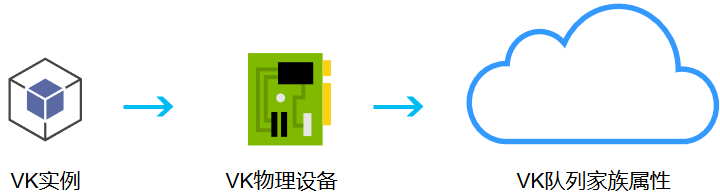
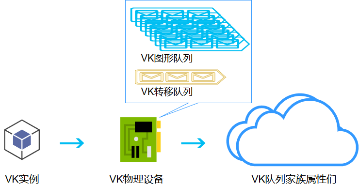

1.4 人事!你给那个绿胖子找个活儿干!
我们在有了物理设备以后,我们是不可以直接用的,就比如在工作岗位上,往往有人事这个部门一样,逻辑设备就好比是工作岗位的人事部门,管着GPU具体该干什么
可以让一个GPU干多份工作吗?
你上班会遇到SB领导嘛?
答案是可以的,一个GPU可以干很多份工作.
上回有些概念没讲清楚因为还没有真正的去使用这些显卡(工人)所以,看看简历就行了,这回我们要面试了.
理性情况下,每个人都有自己的拿手的技能,都非常专注于干一件事干好.  实际情况下,有一些员工过于优秀突出(特指RTX2080Ti这种),他会好多种技能. 
有过于突出的就有过于捞的,那些过于捞的没有图形队列的显卡(加速卡吧)就别瞎掺和了,挖矿去吧.
在上一篇教程里我们已经查询了有哪些GPU(干活的)可以用,有哪些队列家族可以用,这回我们来给他们正式安排到人事部.
在app下创建logical_device.rs并加入mod.rs
use super::validation::*;
use ash::version::InstanceV1_0;
use ash::vk;
use ash::version::DeviceV1_0;
use std::ffi::CString;
use std::ptr;
use std::os::raw::c_char;
pub struct QueueFamilyIndices {
//这个队列家族有几号人
pub graphics_family: i32,
}
impl QueueFamilyIndices {
//如果不是没人就ok
//没人证明你的显卡的驱动坏了或者显卡该换了
pub fn is_complete(&self) -> bool {
self.graphics_family >= 0
}
}
//创建逻辑设备
pub fn create_logical_device(
instance: &ash::Instance,
physical_device: vk::PhysicalDevice,
validation: &ValidationInfo,
) -> (ash::Device, vk::Queue) {
//这个函数在下面↓
let indices = find_queue_family(instance, physical_device);
let queue_priorities = [1.0_f32];
//就和人事填姓名年龄一样,填上队列的表(这是个什么不正经的队列,过来干蛤的)
let queue_create_info = vk::DeviceQueueCreateInfo {
s_type: vk::StructureType::DEVICE_QUEUE_CREATE_INFO,
p_next: ptr::null(),
flags: vk::DeviceQueueCreateFlags::empty(),
queue_family_index: indices.graphics_family as u32,
p_queue_priorities: queue_priorities.as_ptr(),
queue_count: queue_priorities.len() as u32,
};
//指定特性
let physical_device_features = vk::PhysicalDeviceFeatures {
..Default::default()
//默认不开吊炸天的任何特性
};
let requred_validation_layer_raw_names: Vec<CString> = validation
.required_validation_layers
.iter()
.map(|layer_name| CString::new(*layer_name).unwrap())
.collect();
let enable_layer_names: Vec<*const c_char> = requred_validation_layer_raw_names
.iter()
.map(|layer_name| layer_name.as_ptr())
.collect();
//显卡的姓名,年龄,家属表填一填
let device_create_info = vk::DeviceCreateInfo {
s_type: vk::StructureType::DEVICE_CREATE_INFO,
p_next: ptr::null(),
flags: vk::DeviceCreateFlags::empty(),
queue_create_info_count: 1,
p_queue_create_infos: &queue_create_info,
enabled_layer_count: if validation.is_enable {
enable_layer_names.len()
} else {
0
} as u32,
pp_enabled_layer_names: if validation.is_enable {
enable_layer_names.as_ptr()
} else {
ptr::null()
},
enabled_extension_count: 0,
pp_enabled_extension_names: ptr::null(),
p_enabled_features: &physical_device_features,
};
//根据以上信息创建这个显卡的逻辑设备
//显卡正式入职
let device: ash::Device = unsafe {
instance
.create_device(physical_device, &device_create_info, None)
.expect("Failed to create logical Device!")
};
let graphics_queue = unsafe { device.get_device_queue(indices.graphics_family as u32, 0) };
(device, graphics_queue)
}
pub fn find_queue_family(
instance: &ash::Instance,
physical_device: vk::PhysicalDevice,
) -> QueueFamilyIndices {
let queue_families =
unsafe { instance.get_physical_device_queue_family_properties(physical_device) };
let mut queue_family_indices = QueueFamilyIndices {
graphics_family: -1,
};
let mut index = 0;
//遍历并计数
for queue_family in queue_families.iter() {
if queue_family.queue_count > 0
&& queue_family.queue_flags.contains(vk::QueueFlags::GRAPHICS)
{
queue_family_indices.graphics_family = index;
}
if queue_family_indices.is_complete() {
break;
}
index += 1;
}
queue_family_indices
}
且慢,还不算完,我们还需要把这个放到我们的vulkan实例vki.rs中去
pub struct VKI {
pub entry: ash::Entry,
pub instance: ash::Instance,
pub debug_report: ash::extensions::ext::DebugReport,
pub debug_callback: vk::DebugReportCallbackEXT,
pub physical_device: vk::PhysicalDevice,
pub logical_device: ash::Device,//新增
pub graphics_queue: vk::Queue,//新增
}
impl VKI {
pub fn new() -> VKI {
let entry = ash::Entry::new().unwrap();
let instance = create_instance(
&entry,
WINDOW_TITLE,
VALIDATION.is_enable,
&VALIDATION.required_validation_layers.to_vec(),
);
let (debug_report, debug_callback) = setup_debug_callback(&entry, &instance);
let physical_device = pick_physical_device(&instance);
let (logical_device, graphics_queue) =
create_logical_device(&instance, physical_device, &VALIDATION); //新增
return VKI {
entry: entry,
instance: instance,
debug_report: debug_report,
debug_callback: debug_callback,
physical_device: physical_device,
logical_device:logical_device,
graphics_queue:graphics_queue,
};
}
我们还需要准备一套方法来解雇drop这群显卡
impl Drop for VKI {
fn drop(&mut self) {
unsafe {
self.logical_device.destroy_device(None);//新增
if VALIDATION.is_enable {
self.debug_report
.destroy_debug_report_callback(self.debug_callback, None);
}
self.instance.destroy_instance(None);
}
}
}
现在项目结构已经乱成一锅粥了,所以我顺便调整了下项目结构 这个可以在 When-Rust-meets-Vulkan-Codes中1.4找到,这个就不讲了 自行调整吧.